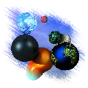
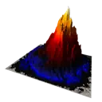
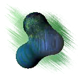
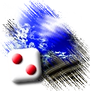
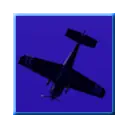
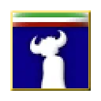

Bryce Goodies
Here's a collection of a few custom made materials and skies for Bryce 3D, as well as modifications to existing materials. I've used a lot of these in renders of my own. There's a good handful in here with a lot of variance. In here is also a few other collections of stuff.

SR64DD's Materials and Skies for Bryce
14.3 MB - Click here to download (MAT, SKY)

Cruising the Canyon Rig Examples and Lens
24.5 MB - Click here to download (BR7, OBJ)

A Couple Couple Textures and Skies
436 KB - Click here to download (TEX, SKY)

Bryce Skies made from Random Textures
1.72 MB - Click here to download (SKY)
3DS Custom Themes
A while back I made a few 3DS themes based on things I like (well, pretty much just songs). They're kinda crappy but also cool and I might make more in the future, so why not share them too?

It's A Mistake 3DS Theme
2.46 MB - Click here to download

Travelling Without Moving 3DS Theme
2.66 MB - Click here to download
To install the themes, use this guide.